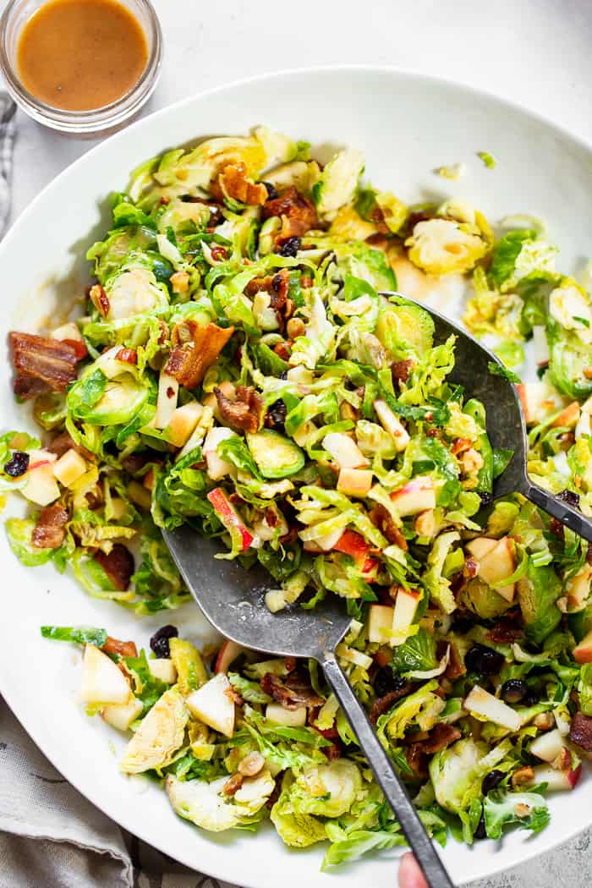

Chopped Brussell Sprouts

Description
This dish is great
Enjoy
Ingredients
1/4 cup sunflower seed oil
2 tablespoons Dijon Mustard
1/4 teaspoon ground black pepper
6 cups Brussels sprouts, trimmed, halved, sliced
2 Gala apples, cored and thinly sliced
1/2 cup dried cranberries
1/3 cup raw sunflower seed kernels
1/3 cup shelled, raw pumpkin seeds
Steps
1. Whisk shallot, vinegar, oil, Dijon mustard, honey, salt, and pepper together in a small bowl.
2. Place Brussels sprouts, apples, cranberries, almonds, sunflower seeds, and pumpkin seeds in a bowl; pour vinegar mixture
over and toss to combine.
Nutrition Facts
Per Serving: 230 calories; protein 6g; carbohydrates 22.2g; fat 14.8g; sodium 258.7mg
Homepage